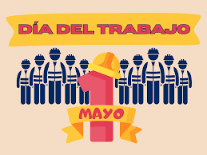

El 1 de mayo se celebra el Día Internacional de los Trabajadores, una jornada festiva mundial que conmemora la lucha histórica del movimiento obrero por condiciones laborales dignas, especialmente la jornada de 8 horas. La fecha homenajea a los "mártires de Chicago", trabajadores ejecutados en 1886 por reclamar sus derechos. Wikipedia Wikipedia +4 Detalles claves sobre el 1 de mayo: Origen: En 1886, miles de trabajadores en Estados Unidos iniciaron una huelga el 1 de mayo, que culminó en la revuelta de Haymarket en Chicago el 4 de mayo, resultando en represión policial y condenas injustas. Propósito: Es una jornada de reivindicación social y laboral, reflexión sobre derechos y unidad de la clase trabajadora. Carácter festivo: Se celebra como día festivo nacional en la mayoría de los países del mundo. En Bolivia: Se destaca el aporte del sector productivo y se reafirma la defensa de los derechos laborales, conmemorando la fecha para valorar la lucha por un trabajo digno.